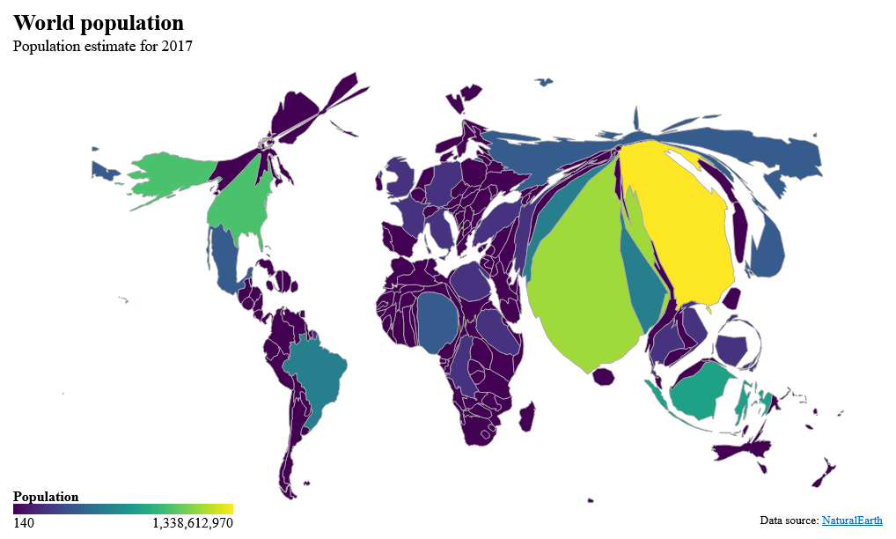

Cartogram htmlwidget for visualizing geographical data by distorting a TopoJson topology, using cartogram-chart


Overview

Created with:
library(topogram)
world %>%
topogram(
value = "pop_est",
label = "{name}: {format(pop_est, big.mark = ',')}",
palette = scales::col_bin("viridis", bins = 20, domain = NULL)
) %>%
topogram_legend(
title = "Population",
formatter = scales::label_comma()
) %>%
topogram_labs(
title = "World population",
subtitle = "Population estimate for 2017",
caption = "Data source: NaturalEarth"
)More examples in the {pkgdown} website
 Victor Perrier
Victor Perrier Fanny Meyer
Fanny Meyer